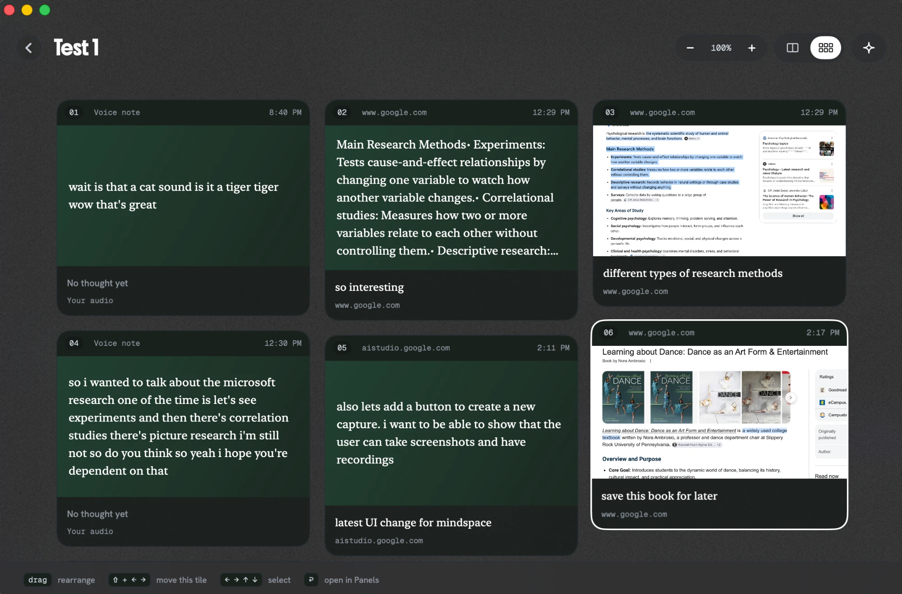
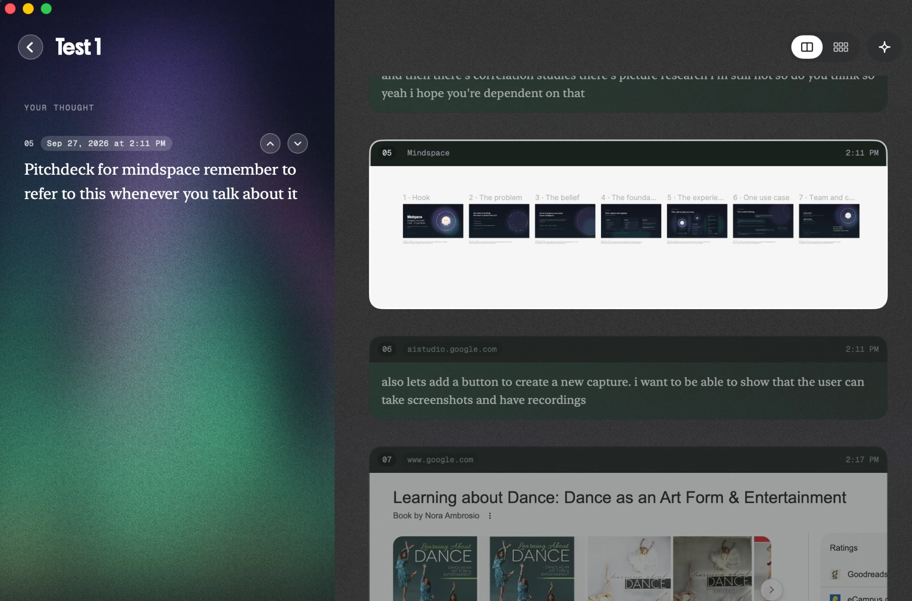
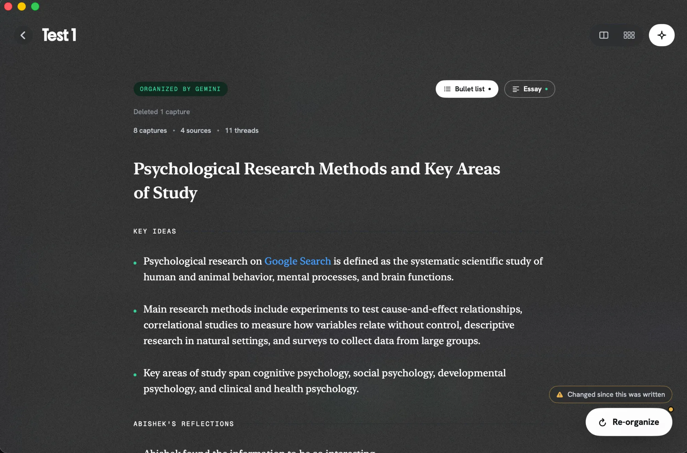
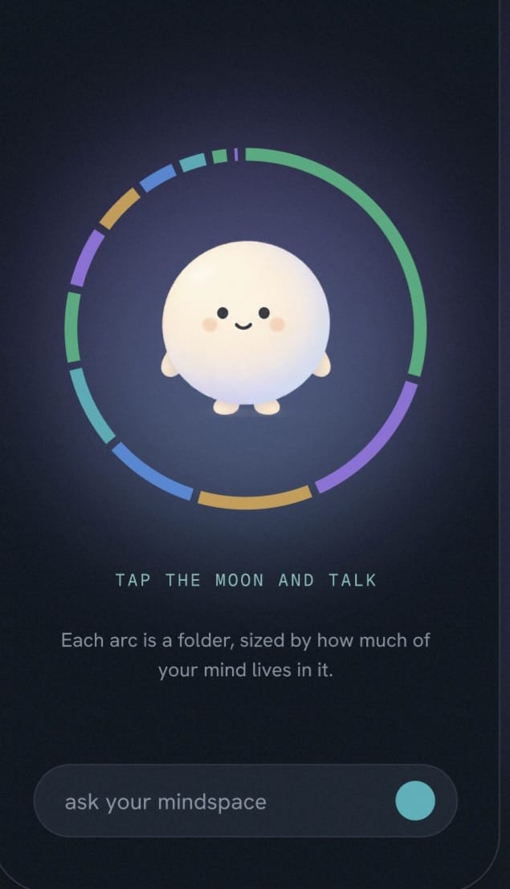

Mindspace captures anything on your screen, the text you selected, a voice note or a whole meeting, then asks you for one line about why you kept it. When a note has enough in it, Mindspace writes the tidy version for you.
Free · macOS 14 Sonoma or newer · Apple silicon and Intel
How it works
Hover it and its options fan out. Capture without leaving whatever you are doing, or use a shortcut and never touch it at all.
A whole window, or drag a box around part of it. ⌘⇧G / ⌘⇧P
Whatever you have highlighted, in any app. ⌘⇧T
Voice notes, transcribed on your Mac. Nothing leaves it. ⌘⇧A
You on one side, everyone else on the other. Only when you say so. ⌘⇧M
On your Mac



Tap the moon and talk
Around the moon, each arc is a folder, sized by how much of your mind lives in it. Ask it a question and it answers from the things you kept, and the thoughts you had about them.
Storing what you read is easy. Keeping the thinking around it is not. Mindspace keeps both, side by side.

Private by default